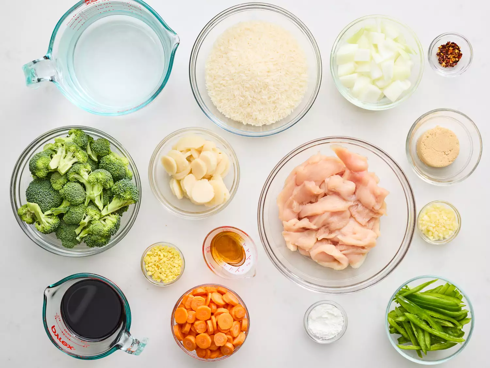

Chicken-Stir-Fry

Photo by Rita
This chicken stir fry recipe is packed with veggies and a delicious sweet and savory soy, ginger, and garlic sauce that gets a kick from chili flakes.
It can be served white or brown rice for a quick dinner
Ingredients
- 4 cups of water
- 2 cups white rice
- ⅔ cup low-sodium soy sauce, or to taste
- ⅔ cup low-sodium soy sauce, or to taste
- 1 tablespoon cornstarch
- 1 tablespoon minced fresh ginger
- 1 tablespoon minced garlic
- ¼ teaspoon red chili flakes
- 3 skinless, boneless chicken breast halves, thinly sliced
- 2 tablespoon sesame oil, divided
- 1 head broccoli, broken into florets
- 1 onion, cut into large chunks
- 1 cup slices carrots
- 1(8 ounce)can sliced water chestnuts, drained
- 1 green bell pepper, cut into matchsticks
Steps

credit:Stacy Allen / Food Stylist: Julian Henserling / Prop Stylist: Christina Daley
- Gather all Ingredients
- Bring water and rice to a boil in a saucepan over high heat. Reduce heat to medium-low, cover, and simmer until rice is tender, and liquid has been absorbed, 20 to 25 minutes.
- Meanwhile, combine soy sauce, brown sugar, and cornstarch in a medium glass or ceramic bowl; stir until smooth.
- Stir in ginger, garlic, and red pepper flakes; add chicken and stir to coat. Cover and marinate in the refrigerator for at least 15 minutes.
- Heat 1 tablespoon sesame oil in a wok or large skillet over medium-high heat. Add broccoli, onion, carrots, water chestnuts, and bell pepper; cook and stir until just tender, about 5 minutes.
- Transfer vegetables into a dish; set aside.
- Heat remaining 1 tablespoon sesame oil in the same wok or skillet over medium-high heat. Add chicken, reserving marinade, and cook until just browned, about 2 minutes per side.
- Stir in vegetables and reserved marinade. Bring to a boil; cook and stir until chicken is no longer pink in the center and vegetables are tender, 5 to 7 minutes.
- Serve over rice.
Ladies and gents, and that's how you prepare a Chicken Stir Fry
Home